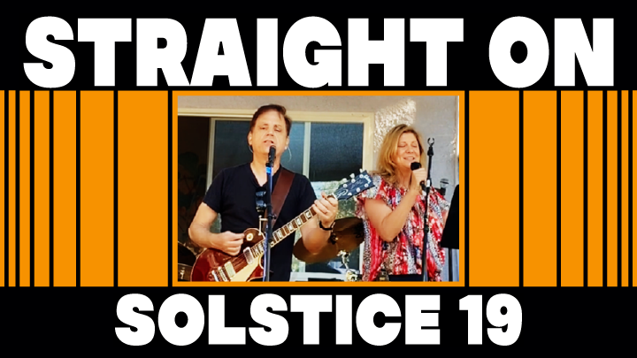

| HOME | MUSICIAN | SONG WRITER | PRODUCER |
| ALBUMS | CHRISTMAS SONGS | VIDEOS | COLLABORATIONS | BEHIND THE SCENES | DOWNLOAD | ★ JOIN EMAIL LIST ★ |
|

Behind The Scenes #4 At big events, things seldom go as planned. The 2019 Solstice was no exception. Of course it was great fun and everyone enjoyed themselves. But it had its share of surprises. Two areas of problems affected the creation of our music videos for Solstice 19: video clips of our set, and the recorded audio. Nobody was really in charge of doing video. Mark set up up 2 stationary cameras to record the entire event, one view from the left of the stage and the other on the right -- this was a really good start. We wouldn't find out until later that by the time our set had started the left camera had ceased to function. Sharon set my iPhone on the ground on a small stand to the right of the little stage and turned it on just before we started our set. So Mark's right camera and my low-angle iPhone were the only two cameras that recorded our entire set, and they were both stationary shots from the right. Many of the clips you see in our Solstice 19 videos were from people in the audience who were good enough to send them to us. In fact, some of the people who donated those clips are probably reading this message! Thanks again! I'm really grateful we got those clips. For me it's a real bore to watch a music video with only one or two stationary camera angles. For the last couple of songs in our set, there were very few clips. I guess because people had stopped shooting video and were just sitting back and watching. But in the end, with so many people giving us clips, I was able to construct something reasonable.
The audio recordings from the mixer had big challenges too, which I will
not bore you with. But something happened with the audio for Straight On that
was was kind of interesting. Someone forgot to press record
on the mixer until after song had already started...
meaning that the good audio recording for this song started a
few bars into the song. So now what? Initially, we discussed
just fading in from the point were the audio began. But I really wanted to
hear the entire song, from the beginning. When I hear a fade |